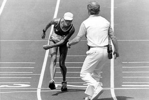

vamo, vamo, vamo…
Posts tagged Testemunhos Alex
Tudo bem – por enquanto!
48 years
by Alecão
in Ex-sedentário
 Ontem fui no cardiologista. Liguei de manhã, marquei consulta para a tarde. E na consulta já fiz ecocardiografia e teste de esforço na seqüência. Isso é dinamismo, o resto é conversa. Tudo deu normal, ufa!
Ontem fui no cardiologista. Liguei de manhã, marquei consulta para a tarde. E na consulta já fiz ecocardiografia e teste de esforço na seqüência. Isso é dinamismo, o resto é conversa. Tudo deu normal, ufa!
Apesar de normal, tomei muita, mas muita bronca mesmo por conta do excesso de peso. Sai com a orelha ardendo.
Por falar em teste de esforço, foi um verdadeiro treino. A menina que aplicou o teste era sádica, cortou todos os pelos do meu peito e senti nos olhos dela que queria que eu caisse da esteira. A velocidade e inclinação estavam bem acima do que eu estava acostumado, um a um os eletrodos foram se soltando, mas não cai para decepção dela. 🙂
Agora estou com o guia de exame de sangue bem extenso e é onde mora o perigo, em meus últimos exames, tanto trigliceres quanto colesterol deram altos, com certeza não será diferente. Assim que sair o resultado eu posto aqui.
XIII Troféu Cidade de São Paulo Carrefour Viver 10 Km
158 years
by Alecão
in Ex-sedentário
O nome da prova é tão grande que tiveram que escrever em arco na medalha… 🙂


Tinha prometido que iria correr na sexta feira anterior ao evento, o que não aconteceu por conta da chuva e compromissos, mas na quinta eu treinei (apesar de não ter postado), foi um treino bem cansativo, acho que meu corpo ainda não tinha se recuperado do treino de terça e quarta.
Esta seria minha primeira corrida sozinho, mas meu sogro participou comigo, foi muito legal ter mais um ex-sedentário se juntando ao time. Era a primeira corrida dele.
“Correu” tudo bem, foram 6 quilômetros e um pouquinho. E essa foi a grande surpresa. Porque, quando vi a marca de 6 quilômetros, fiquei procurando o tapete de chegada e nada. Com isso desanimei (como a maioria dos corredores de 6 Km) e terminei a prova andando, a chegada estava a mais de 800 metros a frente da marca de 6 Km. Não entendi porque isso aconteceu. Falando em organização. Algumas coisas estavam precárias, como o barro que se formou, que quase escorreguei por 2 vezes, em volta do Obelisco. O kit era montado na hora com uma maçã, um Marathon e a medalha em dezenas de filas que davam em um balcão que prendia a pessoa na hora de sair.
Bem, meu tempo no meu relógio (quando cruzei a marca de 6 Km) foi de 55 minutos, repetindo a performance da corrida de natal. Mas esta corrida, ao invés da de natal, teve muito sol e com várias subidas e descidas da Rubem Berta. Portanto acredito que estou melhor que em dezembro. Bom saber que estou melhorando meu corpo aos poucos e sinto isso no dia-a-dia.
Incrível foi meu sogro, que nunca havia participado de corridas e sempre esteve ao meu lado. Gostou e disse que quer participar da próxima, e pode deixar que eu aviso sim.
Os tempos e colocações oficiais (furados na minha opinião) estão aqui, eu sou o número 8938 e meu sogro é o 9101.
Mais notícias sobre o XIII Troféu Cidade de São Paulo Carrefour Viver 10 Km:


Treino 2 – 45 minutos
48 years
by Alecão
in Ex-sedentário
Como prometido ontem, hoje eu aumentei o esforço e treinei por 45 minutos apenas de trote (T024), ontem foram 45 minutos entre trote e caminhada. Amanhã aumentarei o tempo e sexta farei 5 Km conforme prometido.
Então Thiago, treinei!
18 years
by Alecão
in Ex-sedentário
Ontem, eu disse pessoalmente ao Thiago, amanhã você vai me perguntar se treinei e vou dizer, claro!
Pois então, eu treinei hoje de manhã (T023) depois de um jejum de treinos. Tenho corrida segunda feira e preciso me preparar. Foram 45 minutos bem leves para não ter nenhuma dor muscular que me atrapalhe. Quarta e Quinta irei treinar aumentando o rítimo e na Sexta irei treinar 5 Km em um percurso que já estou acostumado. Sabado e Domingo apenas alongamento e muita hidratação.
Feliz Natal – correndo
28 years
by Alecão
in Ex-sedentário
 Sábado passado eu, Claudio, Thiago e Paula, encaramos a prova de natal da Corpore. Foram 6 km que eu encarei correndo o tempo todo (ou quase).
Sábado passado eu, Claudio, Thiago e Paula, encaramos a prova de natal da Corpore. Foram 6 km que eu encarei correndo o tempo todo (ou quase).
Foi um desafio e tanto, pois não tive uma semana legal, encarando alguns medos interiores, mas a corrida veio e revitalizou meus pensamentos. E que venha os desafios!
Desta vez a minha família estava lá. Minha mulher torcendo por mim e meus filhos vendo o papai correr. Coitados, foram na esperança de ver o “Show da Turma da Mônica” e apenas viram a Mônica mandando beijinhos e distribuindo alguns abraços. Posso dizer que isso faz a total diferença. Motiva saber que eles estarão na linha de chegada esperando a gente.
Largamos, eu, Claudio, Thiago e Paula. No primeiro quilômetro eu acompanhei quanto pode, tanto que fizemos em pouco mais de 7 minutos. Mas a partir de ai, percebi que estava puxado e falei para o Claudio que iria diminuir o rítimo. Segundo quilômetro em 8 minutos e diminuindo… Mesmo porque para chegar no terceiro quilômetro, foi necessário encarar a subida que tem após o portão do IPT. Nesta subida senti o fígado e sugeri ao Claudio para continuar o rítimo enquanto eu caminhava para recuperar, foram 200m e logo chegamos no topo e depois era descida e plano apenas… Não parei e consegui acelerar um pouco no final antes de cruzar a linha de chegada. Muito legal, muito emocionante, muito tudo.
Na chegada, o Claudio disparou e correu até a galera pegando o Henrique e o Maurício no colo. Vi que ele queria me dar o Maurício, mas no estado que estava não iria conseguir segurá-lo e ele acabou cruzando com os dois no colo. Foi bem emocionante.
Thiago e Paula, cruzaram a chegada ao tempo de 45 minutos de prova (aproximadamente).
Eu e o Claudio cruzamos com 55 minutos.
Quero mais!


Em Pitangueiras T021 e T022
38 years
by Alecão
in Ex-sedentário
 Viagem, sempre é bom, principalmente para a praia. E foi para Pitangueiras (Guarujá) que fomos eu minha família, sogro e sogra, cunhada e cocunhado.
Viagem, sempre é bom, principalmente para a praia. E foi para Pitangueiras (Guarujá) que fomos eu minha família, sogro e sogra, cunhada e cocunhado.
No sábado ao chegarmos, o Renato precisava ir no caixa eletrônico do Itaú, não sabíamos a distância e eu estava de chinelo, ao perguntarmos fomos avisados que era longe… Topo, topo, por que não? E fomos, ao todo 45 minutos de caminhada (T021).
No domingo, meu sogro me chamou para caminha na praia, pus meu tênis e fui, no trote, por quase 40 minutos (T022). E com um visual invejável. Muito bom.
Hoje não deu
48 years
by Alecão
in Ex-sedentário
Registro atrasado (T020), sexta passada eu tentei fazer 5 Km andando, mas acabei parando faltando 500 metros mais ou menos, fiz isso em 51 minutos.
Hoje eu acordei meio mal, mas mesmo assim fui para rua (T021). Estava muito difícil o treino e acabei parando de trotar ao 25 minutos e voltei andando para casa. Acredito ser algo do momento. Ontem eu fiquei com dor de cabeça o dia inteiro e provavelmente foi reflexo do dia anterior.
Corrida de Natal? Topo, Topo, por que não?
08 years
by Alecão
in Ex-sedentário

http://www.mundoredondo.com.br
O Claudio me convidou para a Corrida de Natal da Corpore. E eu topo! Topo! Por que não?
.
.
.
Assim terminamos o anos com mais uma corrida. Mais um desafio.
.
.
.
Hoje de manhã, treinei 50 minutos (T019, o T018 não foi registrado no blog), encontrei minha mãe no trajeto. O caminhar dela é na mesma velocidade do meu trote. Sempre me impressionei com a velocidade do caminhar da minha mãe!
.
.
.
E ai turma, vamos nos inscrever? vamos lá!
Cheguei
118 years
by Alecão
in Ex-sedentário
Pensei muito para escolher o título deste post, mas a única coisa que veio a cabeça foi a palavra “Cheguei”.
Pois é, cruzei a linha de chegada após 10 quilômetros.
Na largada tudo é muito emocionante, aquele mar de gente com camisa azul. Depois foi 1, 2, 3 quilômetros… cansando… 4… e me deu hiperventilação, foi uma sensação muito estranha e continuei andando a passos largos e rápidos, sempre ditados pelo Claudio que me acompanhou o tempo todo, mesmo tendo folego para ir a frente.
Ai por diante foi alternância entre corrida e caminhada, mais caminhada que corrida. Meu corpo aguentava mas minha respiração não… Parecia ser impossível a chegada. No quilômetro 7 consegui até uma boa arrancada e finalmente CHEGUEI. E tem até um vídeo para mostrar isso.
A maior alegria foi ter o apoio do Claudio o tempo todo do meu lado, falando, incentivando, torcendo e me envergonhando 🙂 . E o abraço na linha de chegada foi o dos melhores.
Consegui, consegui, consegui, consegui, consegui… eu Cheguei…
Não estou legal
28 years
by Alecão
in Ex-sedentário
Pretendo ser breve aqui. 2 semanas sem treinos e as razões não só são as mesmas como pioraram.
Tanto o Claudio como o Thiago conseguiram mais quando criaram compromissos públicos.
Me proponho um desafio de treinar amanhã cedo, faça chuva ou faça sol, e como diria o Claudio, um presente para mim.
.jpg "DSC01710 (576x1024)")
.jpg "DSC01849 (1024x576)")
.jpg "DSC01930 (1024x576)")


.jpg "IMG_7310 (1024x768)")


{kind=link}
Últimos comentários